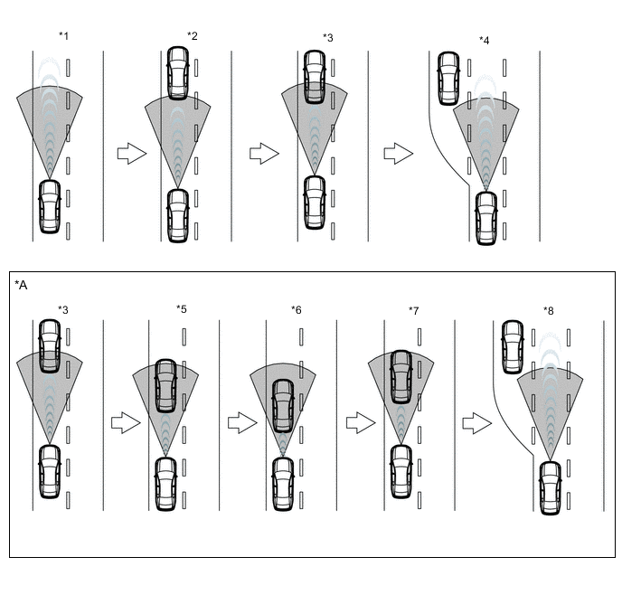

GENERAL
The cruise control main switch is used to turn the dynamic radar cruise control system on and off, as well as operate 7 functions: SET, - (COAST), TAP-DOWN, RES (RESUME), + (ACCEL), TAP-UP and CANCEL. The SET, TAP-DOWN, and - (COAST) functions, and the RES (RESUME), TAP-UP, and + (ACCEL) functions are operated with the same switch. The cruise control main switch is an automatic return type switch which turns on only while operating it in the direction of each arrow and turns off after releasing it.
Tech Tips
The dynamic radar cruise control system has two cruise control modes: constant speed control mode and vehicle-to-vehicle distance control mode.
Vehicle-to-vehicle distance control mode is selected by default when the dynamic radar cruise control system is turned on using the cruise control main switch (ON/OFF button).
Operation of constant speed control mode is the same as that for a conventional cruise control system.
This system maintains the vehicle at the speed that the driver has set, as long as there are no vehicles ahead. In addition to this, the system maintains the vehicle-to-vehicle distance that has been set by the driver. If the system detects a vehicle driving at a slower speed ahead while the driver is driving at a constant speed, it controls the engine to decelerate the vehicle. If further deceleration is required, the system controls the skid control ECU in order to apply the brakes. Thereafter, if there are no vehicles ahead within the set vehicle-to-vehicle distance because either the vehicle ahead or the driver has changed lanes, the system accelerates slowly to reach the set speed and resumes driving at this speed.
Vehicle-to-vehicle distance control mode is designed to control vehicle speed and vehicle-to-vehicle distance using the constant speed function, deceleration cruising function, follow-up cruising function, and acceleration cruising function.
The millimeter wave radar sensor assembly, forward recognition camera and driving support ECU assembly control the system while vehicle-to-vehicle distance control mode is operating, and send signals to each actuator and ECU.
In vehicle-to-vehicle distance control mode, the dynamic radar cruise control system receives signals from the forward recognition camera, yaw rate and acceleration sensor and the steering sensor. Based on these signals, the system then estimates curve radius and compensates for information on the preceding vehicle while turning. It can also compensate using brake control when approaching another vehicle.
This system judges the presence of a vehicle in front and the distance to it based on the signals from the millimeter wave radar sensor assembly and forward recognition camera while vehicle-to-vehicle distance control mode is operating. Using this information, the system informs the driver of danger with the warning buzzer, performs brake control, and turns on the stop lights when approaching a vehicle in front.
The dynamic radar cruise control system performs the following controls (example).
Tech Tips
Vehicle distance increases and decreases in accordance with vehicle speed.
Control conditions are indicated on the multi-information display in the combination meter assembly.

| *A | w/ Full-speed Range Following Function | - | - |
| *1 | Drives the vehicle at a constant speed (set speed: 100 km/h (60 mph)) | *2 | Decelerates the vehicle from the set speed to the speed of the preceding vehicle (80 km/h (50 mph))* |
| *3 | Follows the preceding vehicle while maintaining an appropriate vehicle-to-vehicle distance according to the speed of the preceding vehicle | *4 | Gradually accelerates the vehicle to the set speed and maintains the speed |
| *5 | Decelerates and stops the vehicle while maintaining an appropriate distance with the preceding vehicle | *6 | Maintains the vehicle stopped in conjunction with the brake hold function |
| *7 | When the cruise control main switch is pushed to +RES or the accelerator pedal is depressed after the preceding vehicle starts off, follow-up control is resumed | *8 | If a preceding vehicle is not detected when the vehicle speed is approximately 40 km/h (25 mph) or less, control is canceled |
*: Throttle valve control and brake control are performed to decelerate the vehicle. If deceleration is insufficient and the distance to the preceding vehicle becomes too short, the vehicle approach warning buzzer sounds to warn the driver to take an appropriate action (braking, etc.).
FUNCTION OF MAIN COMPONENTS
The main components of the dynamic radar cruise control system have the following functions:
| Component | Outline | |
|---|---|---|
| Combination Meter Assembly | Cruise Control Indicator (Vehicle-to-vehicle Distance Control Mode) |
|
| Cruise Control Indicator (Constant Speed Control Mode) | Illuminates when the dynamic radar cruise control system is turned on using the cruise control main switch (ON/OFF button) and constant speed control mode is selected. | |
| Cruise Control SET Indicator | Illuminates when the vehicle speed is set. | |
| Multi-information Display |
|
|
| Warning Buzzer | Sounds once to inform the driver if the hybrid vehicle control ECU or driving support ECU assembly detects an automatic cancel signal while the dynamic radar cruise control system is controlling vehicle speed. | |
| Cruise Control Main Switch | ON/OFF Button |
|
| CANCEL Switch | A cancel signal is sent to the hybrid vehicle control ECU when the switch is operated. | |
| +RES Switch | Acceleration and stored speed resume signals are sent to the hybrid vehicle control ECU when the switch is operated. | |
| -SET Switch | Deceleration and vehicle speed setting signals are sent to the hybrid vehicle control ECU when the switch is operated. | |
| Vehicle-to-vehicle Distance Control Switch (Steering Pad Switch Assembly) | When vehicle-to-vehicle distance control mode is controlling vehicle speed, the driver can operate the switch to select the vehicle-to-vehicle distance in 3 stages: long, middle, and short. | |
| Stop Light Switch Assembly | Outputs brake pedal depression signals to the hybrid vehicle control ECU. | |
| Millimeter Wave Radar Sensor Assembly | Sends information such as vehicle-to-vehicle distance, relative speed and presence of a vehicle in front to the driving support ECU assembly based on reflected millimeter waves. | |
| Forward Recognition Camera | Captures the image in front of the vehicle to detect lane markers and objects on the road ahead. | |
| Steering Sensor | Outputs steering angle signals to the driving support ECU assembly. | |
| Speed Sensor | Outputs wheel speed signals to the skid control ECU. | |
| Airbag Sensor Assembly | Yaw Rate And Acceleration Sensor | Outputs yaw rate signals to the driving support ECU assembly. |
| Skid Control ECU (Brake Booster with Master Cylinder Assembly) | Operates the brake actuator assembly in accordance with brake request signals received from the hybrid vehicle control ECU when the dynamic radar cruise control system is in vehicle-to-vehicle distance control mode. | |
| Skid Control Buzzer | Sounds upon receiving signals from the driving support ECU assembly. | |
| Hybrid Vehicle Control ECU |
|
|
| Throttle Body Assembly | Throttle Control Motor | Adjusts the throttle valve opening angle in accordance with signals received from the ECM. |
| Throttle Position Sensor | Outputs the throttle valve opening angle to the ECM. | |
| Driving Support ECU Assembly |
|
|
| VSC OFF Switch | Outputs VSC off signals to the skid control ECU. | |
| Shift Lock Control Unit Assembly | Shift Sensor | Outputs the shift lever position to the hybrid vehicle control ECU. |
| Parking Brake Switch* | Detects operation of the parking brake and cancels the radar cruise control system. | |
| Shift Control Actuator Assembly (Parking Lock)* | Operates the shift control actuator assembly (parking lock) according to signals from the hybrid vehicle control ECU. | |
*: w/ Full-speed Range Following Function
OPERATION OF DYNAMIC RADAR CRUISE CONTROL
Controls performed by the dynamic radar cruise control system in each control mode (constant speed control mode and vehicle-to-vehicle distance control mode) are as follows:
| Mode | Outline |
|---|---|
| Constant Speed Control Mode | Operation of constant speed control mode is the same as that for the conventional cruise control system. However, the difference is as follows:
|
| Vehicle-to-vehicle Distance Control Mode | In vehicle-to-vehicle distance control mode, the system detects a preceding vehicle and maintains an appropriate vehicle-to-vehicle distance according to the speed of the preceding vehicle (follow-up control).
|
| Vehicle-to-vehicle Distance Control Mode (w/ Full-speed Range Following Function) | In vehicle-to-vehicle distance control mode, the system detects a preceding vehicle and maintains an appropriate vehicle-to-vehicle distance according to the speed of the preceding vehicle (follow-up control).
|
Vehicle-to-vehicle Distance Control Mode:
| Function | Outline |
|---|---|
| Set Control (w/o Full-speed Range Following Function) |
|
| Set Control (w/ Full-speed Range Following Function) |
|
| Low Speed Limit Control (w/o Full-speed Range Following Function) | The low speed limit is approximately 40 km/h (25 mph). If the vehicle speed drops below the low speed limit, speed control by the dynamic radar cruise control system is canceled automatically and the set vehicle speed is kept in memory. |
| High Speed Limit Control | The highest possible set speed is approximately 180 km/h (110 mph). The dynamic radar cruise control system cannot be set when the vehicle speed is over the high speed limit. Also, + (ACCEL)/RES (RESUME) cannot be used to increase the speed beyond the high speed limit. |
| Constant Speed Control | The driving support ECU assembly compares the actual vehicle speed and the stored vehicle speed. When the vehicle speed is less than the stored vehicle speed, it increases the opening angle of the throttle valve. |
| Follow-up Control | The vehicle follows the preceding vehicle while maintaining an appropriate vehicle-to-vehicle distance according to the speed of the preceding vehicle. |
| Stop Control (w/ Full-speed Range Following Function) | When the preceding vehicle stops, motive force control is performed to stop the vehicle while maintaining an appropriate vehicle-to-vehicle distance. |
| Stop Retention Control (w/ Full-speed Range Following Function) | After the vehicle has stopped by stop control, the driving support ECU assembly outputs a stop retention request signal to the skid control ECU. Upon receiving this signal, the skid control ECU operates the brake hold function to keep the vehicle stationary. |
| Start Control (w/ Full-speed Range Following Function) |
|
| Mode Control | When the cruise control main switch (ON/OFF button) is pushed and held for 1.5 seconds or more with the dynamic radar cruise control system off, mode changes to constant speed control mode. |
| + (ACCEL) Control | When vehicle-to-vehicle distance control mode is controlling vehicle speed and the cruise control main switch is pushed to +RES and held in that position, the stored vehicle speed increases by approximately 5 km/h or 5 mph. Pushing the cruise control main switch to +RES while following a preceding vehicle using vehicle-to-vehicle distance control mode does not increase actual vehicle speed, but changes only the stored vehicle speed. |
| Tap-up Control (except Europe) |
When vehicle-to-vehicle distance control mode is controlling vehicle speed and the cruise control main switch is tapped to the +RES side (for 0.6 seconds or less), the stored vehicle speed increases by approximately 1 km/h or 1 mph for each time the switch is tapped. |
| Tap-up Control (for Europe) |
When vehicle-to-vehicle distance control mode is controlling vehicle speed and the cruise control main switch is tapped to +RES (for 0.6 seconds or less), the stored vehicle speed increases by approximately 5 km/h or 5 mph for each time the switch is tapped. |
| - (COAST) Control | When vehicle-to-vehicle distance control mode is controlling vehicle speed and the cruise control main switch is pushed to -SET and held in that position, the stored vehicle speed decreases by approximately 5 km/h or 5 mph. |
| TAP-DOWN Control (except Europe) |
When vehicle-to-vehicle distance control mode is controlling vehicle speed and the cruise control main switch is tapped to -SET (for 0.6 seconds or less), the stored vehicle speed decreases by approximately 1 km/h or 1 mph for each time the switch is tapped. |
| TAP-DOWN Control (for Europe) |
When vehicle-to-vehicle distance control mode is controlling vehicle speed and the cruise control main switch is tapped to -SET (for 0.6 seconds or less), the stored vehicle speed decreases by approximately 5 km/h or 5 mph for each time the switch is tapped. |
| Auto Cancel Control | This system has an automatic cancellation function (fail-safe). |
| Manual Cancel Control | Performing any of the following cancels dynamic radar cruise control system control of vehicle speed (the stored vehicle speed in the hybrid vehicle control ECU is maintained).
|
| Other Control Cancellation Conditions | For details of other cancel controls, refer to the fail-safe chart. |
| RES (Resume) Control |
|
| Down Shift Control | When driving on an uphill with the dynamic radar cruise control system controlling vehicle speed, the transmission may downshift from an overdrive gear. After the downshift, if the system determines that the uphill inclination has become smaller based on the throttle valve opening angle, the transmission automatically returns to the overdrive gear. |
| Brake Control | When a large amount of deceleration is required while vehicle-to vehicle distance control mode is controlling vehicle speed, the brake actuator assembly is operated to apply the brakes. The stop lights illuminate at this time. |
Constant Speed Control Mode:
| Function | Outline |
|---|---|
| Constant Speed Control | The driving support ECU assembly compares the actual vehicle speed and the stored vehicle speed. When the vehicle speed is less than the stored vehicle speed, it increases the opening angle of the throttle valve. |
| Set Control |
|
| Low Speed Limit Control | The low speed limit is approximately 40 km/h (25 mph). If the vehicle speed drops below the low speed limit, speed control by the dynamic radar cruise control system is canceled automatically and the set vehicle speed is kept in memory. |
| High Speed Limit Control | The highest possible set speed is approximately 200 km/h (125 mph). The dynamic radar cruise control system cannot be set when the vehicle speed is over the high speed limit. Also, + (ACCEL)/RES (RESUME) cannot be used to increase the speed beyond the high speed limit. |
| + (ACCEL) Control | When the cruise control system is controlling vehicle speed and the cruise control main switch is pushed to +RES and held in that position, the cruise control system sends a signal to the hybrid vehicle control ECU to operate the throttle valve motor of the throttle body with motor assembly to open the throttle valve. Following this, the vehicle speed is stored and maintained when the cruise control main switch is released. If the vehicle speed exceeds the high speed limit (approximately 200 km/h (125 mph)) while the cruise control main switch is in the +RES position, the highest possible set speed is stored. |
| Tap-up Control | When the dynamic radar cruise control system is controlling vehicle speed and the cruise control main switch is tapped to +RES (for approximately 0.6 seconds), the stored vehicle speed increases by approximately 1 km/h or 1 mph for each time the switch is tapped. When the cruise control main switch is tapped to +RES and the difference between the current and stored vehicle speed is more than 5 km/h (3 mph), the stored vehicle speed will not be changed. |
| - (COAST) Control | When the dynamic radar cruise control system is controlling vehicle speed and the cruise control main switch is pushed to -SET and held in that position, the cruise control system sends a "throttle valve opening angle 0°" demand signal to the hybrid vehicle control ECU. Following this, the vehicle speed is stored and maintained when the cruise control main switch is released. Tech Tips An actual throttle valve opening angle of 0° is not possible due to factors such as idle speed control. |
| Tap-down Control | When the dynamic radar cruise control system is controlling vehicle speed and the cruise control main switch is tapped to -SET (for approximately 0.6 seconds), the stored vehicle speed decreases by approximately 1 km/h or 1 mph for each time the switch is tapped. When the cruise control main switch is tapped to -SET and the difference between the current and stored vehicle speed is more than 5 km/h (3 mph), the current vehicle speed is stored and speed control is performed. |
| Auto Cancel Control | This system has an automatic cancellation function (fail-safe). |
| Manual Cancel Control | Performing any of the following cancels dynamic radar cruise control system control of vehicle speed.
|
| Other Control Cancellation Conditions | For details of other cancel controls, refer to the fail-safe chart. |
| RES (Resume) Control | If control of vehicle speed by the dynamic radar cruise control system was canceled due to any of the manual cancel conditions (other than turning the dynamic radar cruise control system off using the cruise control main switch (ON/OFF button)), and if the vehicle speed is between the low and high speed limits, the stored vehicle speed from the time of cancellation will be resumed and maintained when the cruise control main switch is pushed to +RES. |